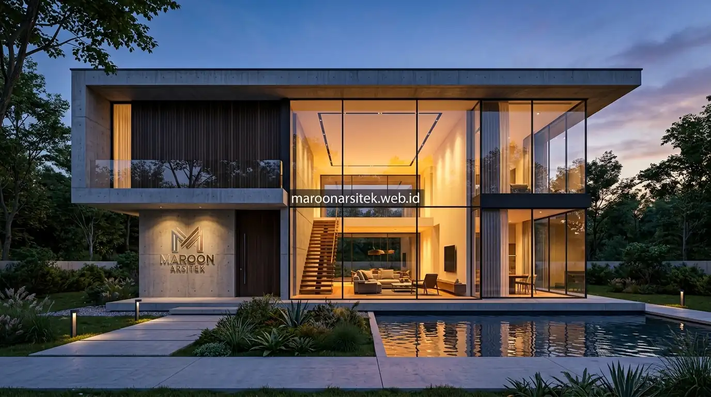

Desain rumah minimalis modern tren 2026 tidak hanya soal skema warna dan material, tetapi juga mengeksplorasi bentuk atap, elemen transisi interior-eksterior, dan sentuhan smart home yang terlihat langsung dari fasad. Maroon Arsitek merangkum dua belas ide tambahan yang dapat menjadi referensi sebelum menentukan konsep akhir rumah minimalis modern Anda melalui layanan jasa arsitek rumah berpengalaman.
Eksplorasi bentuk struktural dan elemen fungsional pada fasad dapat menghadirkan karakter yang berbeda dibanding sekadar bermain pada warna dan tekstur material permukaan. Berikut dua belas ide yang dikelompokkan berdasarkan bentuk atap, elemen transisi ruang, dan elemen pendukung modern pada fasad.
Ide Bentuk Atap dan Struktur Fasad Modern
Bentuk atap dan struktur fasad menjadi elemen yang memberikan karakter kuat pada tampilan rumah minimalis modern, di mana variasi bentuk mampu menghadirkan dimensi visual tanpa menambah kompleksitas ornamen. Berikut beberapa ide yang dapat menjadi referensi:
- Atap datar dengan dak yang difungsikan sebagai roof garden mini: Menghadirkan ruang hijau tambahan sekaligus kesan modern pada bagian atas bangunan, ideal untuk lahan perkotaan yang terbatas.
- Split level pada bagian depan rumah: Memberikan dimensi ketinggian yang bervariasi tanpa perlu menambah luas lahan yang digunakan, menciptakan hirarki visual yang atraktif.
- Cantilever pada bagian teras atau balkon: Menghadirkan kesan mengambang yang menjadi ciri khas arsitektur modern kontemporer tanpa tiang penopang yang menghalangi pandangan.
- Kombinasi bentuk kubus sederhana yang ditumpuk sebagian: Menciptakan variasi tinggi dan bayangan dinamis yang memperkuat kesan tiga dimensi pada fasad di berbagai waktu pencahayaan matahari.
Setiap ide bentuk struktural ini memerlukan perhitungan teknis yang cermat, terutama untuk elemen seperti cantilever yang membutuhkan analisis struktur lebih mendalam sebelum diterapkan pada bangunan fisik.
Geometri Kubus, Atap Datar Dak, dan Aksen Cantilever
Kombinasi massa bangunan bertumpuk (massing blocks) memberikan ritme visual yang tegas namun tetap elegan. Penerapan atap dak beton rata dengan lapisan pelindung anti-bocor kini kerap disinergikan bersama green roof mini, berfungsi sebagai insulator termal alami yang menurunkan suhu interior di bawahnya.
Sementara itu, balok cantilever struktural yang menjorok keluar tanpa kolom penopang menciptakan ilusi gravitasi yang memukau. Area di bawah cantilever balkon dapat difungsikan ganda sebagai peneduh teras utama maupun pelindung drop-off mobil.
Ide Elemen Transisi Interior-Eksterior yang Menyatu
Elemen transisi antara ruang dalam dan luar bangunan menjadi tren yang semakin diminati, menghadirkan kesan menyatu antara interior dan fasad yang terlihat dari luar rumah. Berikut ide yang dapat dipertimbangkan:
- Void terbuka yang terlihat dari fasad depan melalui bidang kaca besar: Memberikan gambaran ruang dalam yang megah sekaligus memaksimalkan pencahayaan alami masuk ke area ruang keluarga.
- Mezanine yang terekspos sebagian ke arah fasad: Menciptakan kesan berlapis yang menarik perhatian tanpa mengungkap seluruh interior rumah, menjaga keseimbangan estetika dan privasi.
- Taman dalam atau courtyard kecil yang terlihat dari jalan melalui pagar rendah: Menghadirkan kesegaran visual bagi siapa pun yang melintas sekaligus privasi hunian yang tetap terjaga.
- Kolam kecil atau elemen air di area depan sebagai focal point: Memberikan sentuhan menenangkan pada tampilan fasad secara keseluruhan lewat refleksi cahaya dan gemercik air yang rileks.
Elemen transisi ini memerlukan pertimbangan privasi yang matang, memastikan area yang terekspos ke luar tetap nyaman bagi penghuni tanpa mengorbankan kebutuhan privasi sehari-hari.

Keterbukaan Void Kaca Besar dan Ruang Courtyard Hijau
Integrasi bidang kaca transparan double glazing bertingkat tinggi menghubungkan pandangan mata dari luar menuju void plafon tinggi (high ceiling). Desain ini tidak hanya menciptakan kesan rumah bernapas dan berjiwa lapang, tetapi juga mendukung integrasi cahaya alami interior rumah sehingga menghemat konsumsi listrik lampu di siang hari.
Hadirnya inner courtyard atau taman saku di dekat pintu gerbang menjadi zona penyaring udara segar sebelum tamu melangkah ke ruang penerima utama. Dipadukan dengan gemercik elemen air, atmosfer hunian terasa sejuk sejak pandangan pertama dari tepi jalan.
Ide Elemen Pendukung Modern pada Fasad Rumah
Elemen pendukung dengan sentuhan teknologi modern turut memperkuat karakter fasad rumah minimalis, menghadirkan fungsi praktis sekaligus nilai estetika tambahan pada tampilan keseluruhan. Berikut ide yang dapat menjadi referensi:
- Carport dengan atap kaca atau polikarbonat transparan: Menghadirkan kesan ringan dan lapang sekaligus tetap melindungi kendaraan dari sengatan panas dan terpaan cuaca hujan.
- Lampu sensor otomatis pada jalur masuk: Memberikan sentuhan smart home yang praktis saat pemilik tiba di rumah sekaligus menambah faktor keamanan di malam hari.
- Material lantai carport dengan pola grid rumput: Menghadirkan kesan hijau alami yang ramah resapan air tanah tanpa mengorbankan kekokohan fungsi area parkir kendaraan.
- Pagar minimalis dengan sistem otomatis: Menggabungkan fungsi keamanan modern yang dapat dikontrol dari ponsel dengan tampilan gerbang yang tetap bersih, rapi, dan sederhana.
Penerapan elemen teknologi pada fasad sebaiknya tetap mempertimbangkan keselarasan visual, agar sentuhan modern tersebut memperkuat konsep keseluruhan alih-alih terlihat sebagai tambahan yang terpisah dari desain utama.
Integrasi Carport Kanopi Kaca dan Sistem Smart Home Otomatis
Struktur carport modern masa kini mengandalkan rangka baja hollow galvanis minimalis dengan penutup kaca tempered laminated anti-pecah. Di bagian lantai, pemanfaatan grass block atau paving berpori menjaga area resapan air hujan tetap optimal sesuai prinsip arsitektur ramah lingkungan.
Sistem penerangan warm white beraksen recessed strip LED yang menyala otomatis melalui sensor inframerah tidak hanya memandu langkah kendaraan saat pulang malam, tetapi juga menyulap tampilan fasad rumah tampak seperti villa peristirahatan mewah yang hangat dan bersahabat.